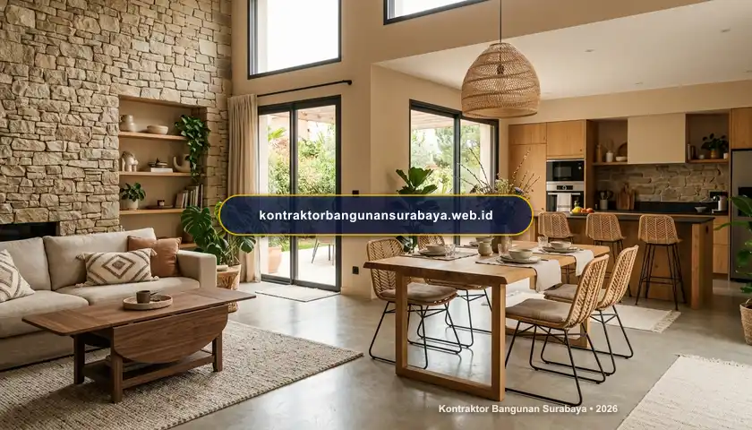

1. Tren Desain Interior Rumah Modern 2026: Material dan Warna Terkini
Apa saja tren desain interior rumah modern yang populer saat ini?
Tren desain interior rumah modern saat ini mengarah pada penggunaan material alami seperti kayu dan rotan yang dipadukan dengan elemen metal minimalis, palet warna earth tone yang hangat, serta konsep ruang terbuka yang menyatukan fungsi ruang keluarga dan dapur. kontraktorbangunansurabaya.web.id mengikuti perkembangan tren ini untuk memberikan referensi desain yang relevan namun tetap fungsional bagi kebutuhan sehari-hari penghuni rumah.
Pergeseran minat masyarakat urban, khususnya di Surabaya, menunjukkan kecenderungan yang semakin kuat terhadap hunian yang mengedepankan ketenangan visual, kenyamanan termal, dan kepraktisan perawatan. Hunian modern tahun 2026 tidak lagi sekadar mengejar kemewahan yang dingin atau estetika kaku, melainkan menciptakan ruang hidup yang membumi, hangat, dan ramah bagi seluruh anggota keluarga.
Karakter Utama Desain Interior 2026
Pendekatan desain interior modern mengombinasikan keindahan visual organik dengan kepraktisan ruang melalui layanan terpadu interior dan finishing bangunan profesional.
2. Palet Warna Earth Tone dan Material Alami yang Kembali Diminati
Warna-warna earth tone seperti cokelat muda, terracotta, dan hijau sage semakin banyak digunakan sebagai warna dasar ruangan karena memberikan kesan hangat dan menenangkan, berbeda dengan tren warna monokrom serba putih dan abu-abu yang sempat mendominasi beberapa tahun sebelumnya.
Material alami seperti rotan pada furnitur, batu alam pada dinding aksen, dan kayu pada lantai atau plafon juga kembali populer, memberikan tekstur dan kehangatan visual yang sulit didapat dari material sintetis, meski tetap perlu diimbangi dengan perawatan yang sesuai agar material tersebut awet dalam jangka panjang.
| Elemen Interior 2026 | Pilihan Warna & Karakter Material | Efek Visual & Keunggulan Ruangan |
|---|---|---|
| Dinding Utama & Aksen | Terracotta lembut, warm beige, hijau sage, cat tekstur plesteran pasir | Menciptakan nuansa teduh, rileks, dan tidak silau oleh pantulan cahaya matahari Surabaya |
| Elemen Furnitur | Kayu jati olahan, kayu sungkai, anyaman rotan sintetis premium | Memberikan tekstur alami yang ramah disentuh dan memperkuat identitas tropis kontemporer |
| Aksen Logam (Hardware) | Kuningan (brass), tembaga brushed, logam hitam doff minimalis | Menghadirkan sentuhan elegan dan mewah tanpa kesan berlebihan atau mencolok |
| Tekstil & Dekorasi | Linen, katun tenun lokal, karpet serat goni (jute), gorden semi-sheer | Menambah lapisan kenyamanan akustik dan kehangatan ruang secara fleksibel |
Kombinasi warna earth tone dengan aksen logam seperti kuningan atau tembaga pada pegangan pintu dan lampu gantung juga menjadi detail kecil yang memberikan sentuhan mewah tanpa perlu merombak keseluruhan konsep ruangan secara besar-besaran.
Pemilihan tekstil seperti bantal sofa, karpet, dan gorden dengan motif tenun atau rajut alami juga menjadi cara mudah menghadirkan nuansa earth tone tanpa harus mengganti furnitur besar, sehingga cocok bagi pemilik rumah yang ingin memperbarui tampilan ruangan dengan anggaran terbatas.
3. Konsep Ruang Terbuka dan Furnitur Multifungsi untuk Rumah Masa Kini
Konsep ruang terbuka yang menggabungkan ruang keluarga, ruang makan, dan dapur dalam satu area besar tanpa sekat masif masih menjadi favorit, karena memberikan kesan luas sekaligus memudahkan interaksi antar anggota keluarga saat beraktivitas di rumah.

Furnitur multifungsi, seperti meja makan yang dapat dilipat atau sofa bed untuk ruang tamu yang sekaligus berfungsi sebagai kamar tidur tambahan, semakin diminati terutama untuk hunian dengan luas terbatas di kawasan perkotaan seperti Surabaya.
Keunggulan Konsep Ruang Terbuka
- Sirkulasi Udara Lancar: Menurunkan suhu ruangan secara alami dan mengurangi beban pendingin ruangan (AC).
- Pencahayaan Alami Optimal: Sinar matahari leluasa menerangi seluruh sudut area utama rumah.
- Fleksibilitas Acara: Ruangan dapat dengan mudah ditata ulang saat mengadakan kumpul keluarga besar.
- Interaksi Keluarga Hangat: Aktivitas memasak dan bersantai dapat dilakukan tanpa terhalang dinding pembatas.
Strategi Furnitur Multifungsi
- Meja Makan Lipat (Extendable): Ukuran ringkas untuk penggunaan harian dan dapat diperpanjang saat ada tamu.
- Storage Tersembunyi: Bangku ottoman dan dipan tempat tidur dengan laci penyimpanan built-in.
- Partisi Semi-Transparan: Pemisah zonasi visual menggunakan kisi-kisi kayu tanpa memutus aliran cahaya.
- Modul Dapur Built-In: Penataan kabinet dapur tinggi hingga plafon untuk memaksimalkan ruang simpan.
Rak dinding terbuka dan cermin berukuran besar juga sering dimanfaatkan sebagai trik visual untuk membuat ruangan terasa lebih luas dan terang, terutama pada rumah tipe kecil yang tidak memiliki banyak ruang untuk furnitur penyimpanan berukuran besar.
Ketika merancang denah ruang terbuka pada proyek bangun rumah baru, zonasi lantai menggunakan perbedaan karpet atau pola material lantai dapat menjadi alternatif cerdas untuk mendefinisikan batas antar fungsi ruang tanpa memerlukan dinding masif.
4. Menerjemahkan Tren ke dalam Desain yang Tetap Fungsional Bersama kontraktorbangunansurabaya.web.id
Mengikuti tren desain bukan berarti mengorbankan fungsi ruang sehari-hari, sehingga setiap elemen tren yang diterapkan sebaiknya tetap disesuaikan dengan kebiasaan dan kebutuhan penghuni rumah, bukan sekadar mengikuti tampilan yang sedang populer di media sosial.
kontraktorbangunansurabaya.web.id membantu menerjemahkan tren desain interior terkini ke dalam solusi yang tetap praktis dan tahan lama, sehingga rumah tetap terlihat modern tanpa mengorbankan kenyamanan dan fungsi ruang dalam penggunaan sehari-hari.
Komitmen Eksekusi Interior Kami di Surabaya:
- Penyesuaian Iklim Tropis: Pemilihan jenis finishing kayu dan pelapis anti-jamur yang teruji tahan terhadap kelembapan tinggi Surabaya.
- Perencanaan Gambar Kerja 3D DED: Visualisasi detail tata letak, pencahayaan, dan custom furniture sebelum fabrikasi dimulai.
- Transparansi Spesifikasi & RAB: Rincian material finishing interior yang jelas dan dapat dipertanggungjawabkan tanpa biaya tersembunyi.
- Pengerjaan Rapi & Bergaransi: Tenaga tukang ahli interior berpengalaman dengan standar pengawasan mutu yang ketat.
Konsultasi dengan tim desain mengenai daya tahan material yang sedang tren juga penting dilakukan, karena tidak semua material yang terlihat menarik secara visual memiliki daya tahan yang baik untuk iklim tropis dengan kelembapan tinggi seperti di Surabaya.
Untuk memahami tahapan perencanaan interior secara menyeluruh sebelum menerapkan tren tertentu, baca kembali panduan mengenai jasa interior dan finishing rumah yang membahas konsep hingga eksekusi interior rumah modern.
Perencanaan Desain & Anggaran Terpadu
Konsultasikan kebutuhan penataan interior dan renovasi hunian Anda bersama tim desain arsitektur dan RAB kami untuk mendapatkan rancangan estetis yang sesuai dengan anggaran yang disiapkan.
5. FAQ Seputar Tren Desain Interior Rumah Modern 2026
6. Konsultasi Gratis Sekarang
Ingin berdiskusi lebih lanjut mengenai kebutuhan konstruksi bangunan Anda di Surabaya? Hubungi tim kami melalui WhatsApp di 0889-8964-3555 untuk konsultasi awal tanpa biaya bersama kontraktorbangunansurabaya.web.id.
Konsultasi WhatsApp di 0889-8964-3555Reza Maulana Nehru
Praktisi & Penulis Edukasi Konstruksi Bangunan di Kontraktor Bangunan Surabaya. Berfokus pada desain interior arsitektural, estetika finishing ruang, estimasi biaya RAB, dan standarisasi pelaksanaan proyek di Surabaya dan sekitarnya.